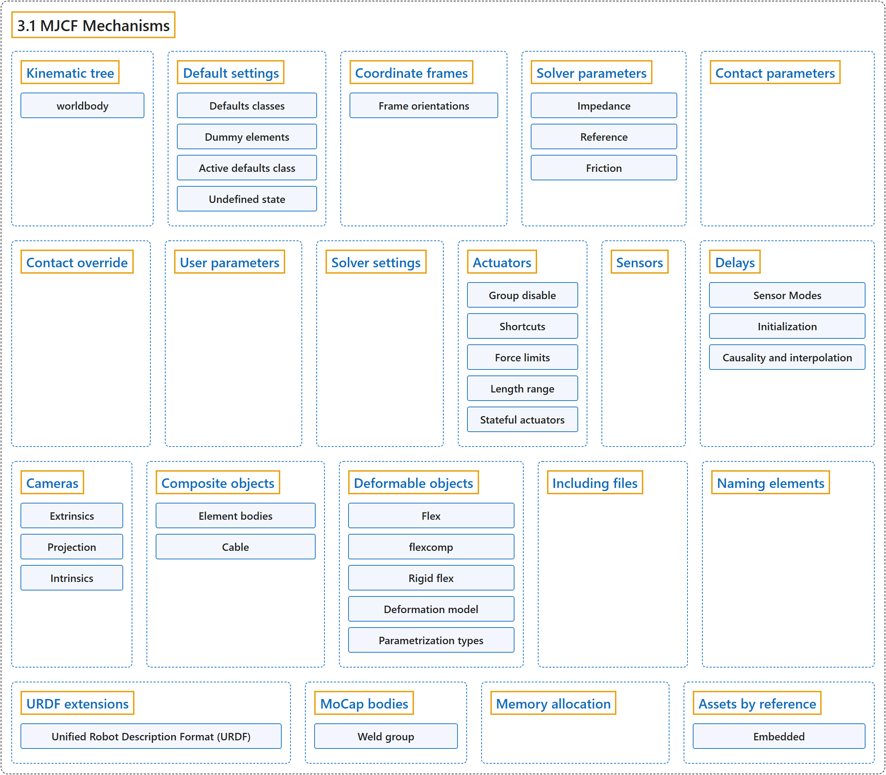

3.1 MJCF Mechanisms
Classification

Glossary
| Term | Definition | 中文翻译 | Source |
|---|---|---|---|
| 3.1 MJCF Mechanisms MJCF 机制 |
(context) "MJCF uses several mechanisms for model creation which span multiple model elements." | （语境）MJCF 使用若干跨越多个模型元素的模型创建机制。 | Google DeepMind, n.d., "MJCF Mechanisms", para. 1 |
| Kinematic tree 运动学树 |
"The main part of the MJCF file is an XML tree created by nested body elements." | MJCF 文件的主体是由嵌套的 body 元素构成的 XML 树。 | Google DeepMind, n.d., "Kinematic tree", para. 1 |
| worldbody 世界刚体 |
"The top-level body is special and is called worldbody." | 顶层刚体很特殊，称为 worldbody。 | Google DeepMind, n.d., "Kinematic tree", para. 1 |
| Default settings 默认设置 |
"MJCF has an elaborate mechanism for setting default attribute values." | MJCF 有一套精细的机制来设置属性默认值。 | Google DeepMind, n.d., "Default settings", para. 1 |
| Defaults classes 默认类 |
"MuJoCo supports unlimited number of defaults classes, created by possibly nested default elements in the XML." | MuJoCo 支持数量不限的默认类，它们由 XML 中可以嵌套的 default 元素创建。 | Google DeepMind, n.d., "Default settings", para. 4 |
| Dummy elements 虚拟元素 |
"The dummy elements contained in the defaults classes are not part of the model; they are only used to initialize the attribute values of the actual model elements." | 默认类中包含的虚拟元素不是模型的一部分；它们只用来初始化实际模型元素的属性值。 | Google DeepMind, n.d., "Default settings", para. 5 |
| Active defaults class 当前默认类 |
"There is always an active defaults class, which can be determined in one of three ways." | 总有一个当前生效的默认类，它可以用三种方式之一确定。 | Google DeepMind, n.d., "Default settings", para. 5 |
| Undefined state 未定义状态 |
"Some attributes, such as body inertia, can be in a special undefined state. This instructs the compiler to infer the corresponding value from other information, in this case the inertias of the geoms attached to the body." | 有些属性（例如刚体惯量）可以处于一种特殊的未定义状态。它指示编译器从其他信息推断相应的值，在这个例子中是附着在刚体上的 geom 的惯量。 | Google DeepMind, n.d., "Default settings", para. 6 |
| Coordinate frames 坐标系 |
"The positions and orientations of all elements defined in the kinematic tree are expressed in local coordinates, relative to the parent body for bodies, and relative to the body that contains the element for geoms, joints, sites, cameras and lights." | 运动学树中定义的所有元素的位置和朝向都用局部坐标表示：刚体相对于父刚体，geom、关节、site、相机和光源相对于包含它们的刚体。 | Google DeepMind, n.d., "Coordinate frames", para. 1 |
| Frame orientations 坐标系朝向 |
"Specifying 3D positions is straightforward, but specifying 3D orientations can be challenging. This is why MJCF provides several alternative mechanisms." | 指定三维位置很简单，但指定三维朝向可能很困难。这就是为什么 MJCF 提供了几种可选的机制。 | Google DeepMind, n.d., "Frame orientations", para. 1 |
| Spatial frame 空间坐标系 |
"A spatial frame is defined by its position and orientation." | 空间坐标系由它的位置和朝向定义。 | Google DeepMind, n.d., "Frame orientations", para. 1 |
| Solver parameters 求解器参数 |
"The constraint solver finds forces that satisfy soft constraints, parameterized by three quantities" | 约束求解器求出满足软约束的力，软约束由三个量参数化 | Google DeepMind, n.d., "Solver parameters", para. 1 |
| Impedance 阻抗 |
"corresponds to a constraint’s ability to generate force" | 对应于约束产生力的能力 | Google DeepMind, n.d., "Impedance", note |
| Reference 参考加速度 |
"determines the motion that constraint is trying to achieve in order to rectify violation" | 决定约束为纠正违反而试图实现的运动 | Google DeepMind, n.d., "Reference", note |
| Time constant 时间常数 |
"By “time constant” we mean the inverse of the natural frequency times the damping ratio." | 所谓“时间常数”，我们指的是固有频率与阻尼比乘积的倒数。 | Google DeepMind, n.d., "Reference", item 1 |
| Friction 摩擦 |
"Friction loss constraints (in joints and tendons) and friction dimensions of elliptic contact cones have zero position violation" | 摩擦损失约束（关节和肌腱中的）和椭圆接触锥的摩擦维度位置违反为零 | Google DeepMind, n.d., "Friction", para. 1 |
| Contact parameters 接触参数 |
(context) "In that case we use the geom attributes solmix and priority to decide how to combine them." | （语境）此时我们用 geom 属性 solmix 和 priority 决定如何组合它们。 | Google DeepMind, n.d., "Contact parameters", para. 1 |
| Contact override 接触覆盖 |
"In order to facilitate this process, we provide a mechanism to override some of the solver parameters, without making changes to the actual model." | 为了方便这个过程，我们提供了一种覆盖部分求解器参数的机制，而无需修改实际模型。 | Google DeepMind, n.d., "Contact override", para. 1 |
| User parameters 用户参数 |
"A number of MJCF elements have the optional attribute user, which defines a custom element-specific parameter array." | 许多 MJCF 元素有可选属性 user，它定义一个元素专属的自定义参数数组。 | Google DeepMind, n.d., "User parameters", para. 1 |
| Solver settings 求解器设置 |
"MuJoCo has three algorithms for solving this optimization problem: Newton, CG, PGS." | MuJoCo 有三种求解这个优化问题的算法：Newton、CG、PGS。 | Google DeepMind, n.d., "Solver settings", para. 1 |
| Actuators 驱动器 |
(context) "This section describes various aspects of using actuators in MuJoCo." | （语境）本节介绍在 MuJoCo 中使用驱动器的各个方面。 | Google DeepMind, n.d., "Actuators", para. 1 |
| Group disable 分组禁用 |
"The actuatorgroupdisable attribute, which can be changed at runtime by setting the mjOption.disableactuator integer bitfield, allows the user to disable sets of actuators according to their group." | actuatorgroupdisable 属性可以在运行时通过设置 mjOption.disableactuator 整数位域来改变，它让用户按分组禁用若干组驱动器。 | Google DeepMind, n.d., "Group disable", para. 1 |
| Shortcuts 快捷方式 |
"In addition, MJCF provides shortcuts for configuring common actuators." | 此外，MJCF 提供了用于配置常见驱动器的快捷方式。 | Google DeepMind, n.d., "Shortcuts", para. 1 |
| Force limits 力限制 |
"Actuator forces are usually limited between lower and upper bounds." | 驱动器的力通常被限制在下界和上界之间。 | Google DeepMind, n.d., "Force limits", para. 1 |
| Control clamping with ctrlrange 用 ctrlrange 截断控制量 |
"If this actuator attribute is set, the input control value will be clamped." | 如果设置了这个驱动器属性，输入的控制值会被截断。 | Google DeepMind, n.d., "Force limits", item 1 |
| Force clamping at actuator output with forcerange 用 forcerange 在驱动器输出端截断力 |
"If this actuator attribute is set, the actuator’s output force will be clamped." | 如果设置了这个驱动器属性，驱动器的输出力会被截断。 | Google DeepMind, n.d., "Force limits", item 2 |
| Force clamping at joint input with joint/actuatorfrcrange 用 joint/actuatorfrcrange 在关节输入端截断力 |
"This joint attribute clamps input forces from all actuators acting on the joint, after passing through the transmission." | 这个关节属性在经过传动之后，截断所有作用在该关节上的驱动器输入力。 | Google DeepMind, n.d., "Force limits", item 3 |
| Force clamping at tendon input with tendon/actuatorfrcrange 用 tendon/actuatorfrcrange 在肌腱输入端截断力 |
"This tendon attribute clamps input forces from all actuators acting on the tendon." | 这个肌腱属性截断所有作用在该肌腱上的驱动器输入力。 | Google DeepMind, n.d., "Force limits", item 4 |
| Length range 长度范围 |
"The field mjModel.actuator_lengthrange contains the range of feasible actuator lengths (or more precisely, lengths of the actuator’s transmission)." | 字段 mjModel.actuator_lengthrange 包含驱动器可行长度的范围（更准确地说，是驱动器传动的长度）。 | Google DeepMind, n.d., "Length range", para. 1 |
| Stateful actuators 有状态驱动器 |
"As described in the Actuation model section of the Computation chapter, MuJoCo supports actuators with internal dynamics whose states are called “activations”." | 如计算一章的驱动模型一节所述，MuJoCo 支持具有内部动力学的驱动器，其状态称为“激活”。 | Google DeepMind, n.d., "Stateful actuators", para. 1 |
| Activation limits 激活限制 |
"In the case of integrated-velocity actuators, it is often desirable to clamp the activation state, since otherwise the position target would keep integrating beyond the joint limits, leading to loss of controllabillity." | 对于积分速度驱动器，通常希望截断激活状态，否则位置目标会一直积分到超出关节限位，导致失去可控性。 | Google DeepMind, n.d., "Activation limits", para. 2 |
| Integrated-velocity actuator 积分速度驱动器 |
"Different from the pure velocity actuators, which implement direct feedback on transmission target’s velocity, integrated-velocity actuators couple an integrator with a position-feedback actuator." | 与对传动目标速度直接反馈的纯速度驱动器不同，积分速度驱动器把一个积分器与一个位置反馈驱动器耦合起来。 | Google DeepMind, n.d., "Activation limits", para. 1 |
| Muscles 肌肉 |
"We provide a set of tools for modeling biological muscles." | 我们提供了一套建模生物肌肉的工具。 | Google DeepMind, n.d., "Muscles", para. 1 |
| Muscle-tendon actuator 肌肉-肌腱驱动器 |
"In biomechanics, a muscle and a tendon are attached in series and form a muscle-tendon actuator." | 在生物力学中，肌肉和肌腱串联连接，构成肌肉-肌腱驱动器。 | Google DeepMind, n.d., "Muscles", para. 4 |
| Optimal resting length 最优静息长度 |
"Another important constant is the optimal resting length of the muscle" | 另一个重要常数是肌肉的最优静息长度 | Google DeepMind, n.d., "Muscles", para. 5 |
| Force-Length-Velocity (FLV) function 力-长度-速度（FLV）函数 |
"The behavior is captured by the Force-Length-Velocity" | 这种行为由力-长度-速度函数刻画 | Google DeepMind, n.d., "Muscles", para. 7 |
| Muscle activation 肌肉激活 |
"Coming back to our muscle model, there is the muscle activation act. This is the state of a first-order nonlinear filter whose input is the control signal." | 回到我们的肌肉模型，还有肌肉激活 act。它是一个以控制信号为输入的一阶非线性滤波器的状态。 | Google DeepMind, n.d., "Muscles", para. 13 |
| Pennation angle 羽状角 |
"Pennation angle (i.e., the angle between the muscle and the line of force) is not modeled in MuJoCo and is assumed to be 0." | 羽状角（即肌肉与力作用线之间的夹角）在 MuJoCo 中不建模，假定为 0。 | Google DeepMind, n.d., "Muscles", Relation to OpenSim, para. 5 |
| Inverse wrap 反向缠绕 |
"We also allow “side sites” to be placed inside the sphere or cylinder, which causes an inverse wrap: the tendon path is constrained to pass through the object instead of going around it." | 我们还允许把“侧 site”放在球体或圆柱体内部，这会造成反向缠绕：肌腱路径被约束为穿过物体，而不是绕过它。 | Google DeepMind, n.d., "Muscles", Relation to OpenSim, para. 6 |
| Sensors 传感器 |
"Sensors do not affect the simulation. Instead their outputs are copied in the array mjData.sensordata and are available for user processing." | 传感器不影响仿真。它们的输出被复制到数组 mjData.sensordata 中，供用户处理。 | Google DeepMind, n.d., "Sensors", para. 1 |
| Delays 延迟 |
"Both actuators and sensors support time delays via a ring buffer that stores timestamped samples." | 驱动器和传感器都通过一个存储带时间戳样本的环形缓冲区支持时间延迟。 | Google DeepMind, n.d., "Delays", para. 1 |
| Sensor Modes 传感器模式 |
"Sensors support both delay and interval/period attributes. The combination determines behavior:" | 传感器同时支持 delay 和 interval/period 属性。二者的组合决定其行为： | Google DeepMind, n.d., "Delays", para. 5 |
| History-only 仅历史 |
"History-only: computed every step, written to sensordata , pushed into history buffer" | 仅历史：每步计算，写入 sensordata，推入历史缓冲区 | Google DeepMind, n.d., "Delays", table, row 1 |
| Delayed 延迟 |
"Delayed: computed every step, sensordata contains delayed reading (read from buffer)" | 延迟：每步计算，sensordata 包含延迟读数（从缓冲区读取） | Google DeepMind, n.d., "Delays", table, row 2 |
| Periodic 周期 |
"Periodic: computed on period, sensordata contains last computed value (no delay)" | 周期：按周期计算，sensordata 包含最近一次计算的值（无延迟） | Google DeepMind, n.d., "Delays", table, row 3 |
| Periodic + Delayed 周期 + 延迟 |
"Periodic + Delayed: computed on period, sensordata contains delayed reading (read from buffer)" | 周期 + 延迟：按周期计算，sensordata 包含延迟读数（从缓冲区读取） | Google DeepMind, n.d., "Delays", table, row 4 |
| Initialization 初始化 |
(context) "History buffers are initialized by mj_resetData as follows:" | （语境）历史缓冲区由 mj_resetData 初始化，方式如下： | Google DeepMind, n.d., "Delays", para. 6 |
| Causality and interpolation 因果性与插值 |
(context) "The most common positive delay value is delay = timestep * nsample, which implements a simple history buffer, with no causality issues." | （语境）最常见的正延迟值是 delay = timestep * nsample，它实现一个简单的历史缓冲区，不存在因果性问题。 | Google DeepMind, n.d., "Delays", para. 8 |
| Cameras 相机 |
"Besides the default, user-controllable, free camera, “fixed” cameras can be attached to the kinematic tree." | 除了默认的、用户可控的自由相机之外，还可以把“固定”相机附着到运动学树上。 | Google DeepMind, n.d., "Cameras", para. 1 |
| Extrinsics 外参 |
"By default, camera frames are attached to the containing body." | 默认情况下，相机坐标系附着在包含它的刚体上。 | Google DeepMind, n.d., "Cameras", item 1 |
| Projection 投影 |
"Cameras use perspective projection by default. Setting projection to orthographic switches to an orthographic projection, where the fovy attribute is interpreted as the vertical extent in length units rather than degrees." | 相机默认使用透视投影。把 projection 设为 orthographic 会切换到正交投影，此时 fovy 属性被解释为以长度单位表示的垂直范围，而不是角度。 | Google DeepMind, n.d., "Cameras", item 2 |
| Intrinsics 内参 |
"Camera intrinsics are specified using ipd (inter-pupilary distance, required for stereoscopic rendering and VR) and fovy (vertical field of view, in degrees)." | 相机内参用 ipd（瞳距，立体渲染和 VR 需要）和 fovy（垂直视场角，以度为单位）指定。 | Google DeepMind, n.d., "Cameras", item 3 |
| Composite objects 复合物体 |
"Composite objects are collections of existing elements originally designed to simulate particle systems, ropes, cloth, and soft bodies." | 复合物体是现有元素的集合，最初设计用来仿真粒子系统、绳索、布料和软体。 | Google DeepMind, n.d., "Composite objects", para. 1 |
| Element bodies 单元刚体 |
"Composite objects are made up of regular MuJoCo bodies, which we call “element bodies” in this context." | 复合物体由常规的 MuJoCo 刚体组成，在这里我们称之为“单元刚体”。 | Google DeepMind, n.d., "Composite objects", para. 2 |
| Cable 缆绳 |
"The cable simulates an inextensible elastic 1D object having twist and bending stiffness." | 缆绳仿真一个具有扭转刚度和弯曲刚度、不可伸长的一维弹性物体。 | Google DeepMind, n.d., "Composite objects", para. 5 |
| Deformable objects 可变形物体 |
"In MuJoCo 3.0 we have introduced true deformable objects involving new model elements." | 在 MuJoCo 3.0 中，我们引入了涉及新模型元素的真正可变形物体。 | Google DeepMind, n.d., "Deformable objects", para. 1 |
| Flex 柔性体 |
"A flex is a collection of MuJoCo bodies that are connected with massless stretchable elements." | flex 是一组由无质量可拉伸单元连接起来的 MuJoCo 刚体。 | Google DeepMind, n.d., "Deformable objects", para. 2 |
| flexcomp flexcomp 元素 |
"To aid with modeling, we have further introduced the element flexcomp which automates the creation of the low-level flex, similar to how composite automates the creation of (collections of) MuJoCo objects needed to emulate a soft body." | 为了辅助建模，我们进一步引入了元素 flexcomp，它自动创建低层的 flex，类似于 composite 自动创建模拟软体所需的（一组）MuJoCo 对象。 | Google DeepMind, n.d., "Deformable objects", para. 1 |
| Rigid flex 刚性柔性体 |
"It is also possible to create a rigid flex, by assigning all vertices to the same body." | 也可以创建刚性 flex，方法是把所有顶点都分配给同一个刚体。 | Google DeepMind, n.d., "Deformable objects", para. 3 |
| Deformation model 变形模型 |
"Instead, the design philosophy is to use a single set of parameters and provide two modeling choices: a new (soft) equality constraint type that applies to all edges of a given flex, which permits large time steps, or a discretized continuum representation, where each element is in a constant stress state, which is equivalent to piecewise linear finite elements and achieves improved realism and accuracy." | 设计思路是使用同一组参数，并提供两种建模选择：一种新的（软）等式约束类型，作用于给定 flex 的所有边，允许较大的时间步；或一种离散化的连续体表示，其中每个单元处于常应力状态，等价于分段线性有限元，可以提高真实性和精度。 | Google DeepMind, n.d., "Deformable objects", para. 4 |
| Edge-based model 基于边的模型 |
"The edge-based model could be seen as a “lumped” stiffness model, where the correct coupling of deformation modes (e.g. shear and volumetric) is averaged in a single quantity." | 基于边的模型可以看作一种“集总”刚度模型，变形模式（例如剪切和体积）之间的正确耦合被平均为单个量。 | Google DeepMind, n.d., "Deformable objects", para. 4 |
| Continuum model 连续体模型 |
"The continuum model enables instead to specify shear and volumetric stiffnesses separately using the Poisson’s ratio of the material." | 连续体模型则可以利用材料的泊松比分别指定剪切刚度和体积刚度。 | Google DeepMind, n.d., "Deformable objects", para. 4 |
| Parametrization types 参数化类型 |
"While the default behavior of flexcomp produces a “full” flex where every node corresponds to a MuJoCo body, it also supports specialized parametrizations for volumetric objects: trilinear and quadratic." | flexcomp 的默认行为生成“完全”flex，其中每个节点对应一个 MuJoCo 刚体，但它也支持针对体积物体的专门参数化：三线性和二次。 | Google DeepMind, n.d., "Deformable objects", para. 5 |
| Full flex 完全柔性体 |
"While the default behavior of flexcomp produces a “full” flex where every node corresponds to a MuJoCo body, it also supports specialized parametrizations for volumetric objects: trilinear and quadratic." | flexcomp 的默认行为生成每个节点都对应一个 MuJoCo 刚体的“完全”flex，但它也支持针对体积物体的专门参数化：三线性和二次。 | Google DeepMind, n.d., "Deformable objects", para. 5 |
| Trilinear 三线性 |
"Trilinear flexes use 8-node hexahedral cells with linear interpolation along each axis, while quadratic flexes use 27-node cells with quadratic interpolation, allowing for curved deformation modes." | 三线性 flex 使用 8 节点六面体单元，沿每个轴线性插值，而二次 flex 使用 27 节点单元和二次插值，允许弯曲的变形模式。 | Google DeepMind, n.d., "Deformable objects", para. 5 |
| Quadratic 二次 |
"Trilinear flexes use 8-node hexahedral cells with linear interpolation along each axis, while quadratic flexes use 27-node cells with quadratic interpolation, allowing for curved deformation modes." | 三线性 flex 使用 8 节点六面体单元，沿每个轴线性插值，而二次 flex 使用 27 节点单元和二次插值，允许弯曲的变形模式。 | Google DeepMind, n.d., "Deformable objects", para. 5 |
| Including files 包含文件 |
"MJCF files can include other XML files using the include element." | MJCF 文件可以用 include 元素包含其他 XML 文件。 | Google DeepMind, n.d., "Including files", para. 1 |
| Naming elements 元素命名 |
"Most model elements in MJCF can have names. They are defined with the attribute name of the corresponding XML element. When a given model element is named, its name must be unique among all elements of the same type." | MJCF 中的大多数模型元素都可以有名称。名称用相应 XML 元素的 name 属性定义。当某个模型元素有名称时，它的名称必须在同类型的所有元素中唯一。 | Google DeepMind, n.d., "Naming elements", para. 1 |
| URDF extensions URDF 扩展 |
"In addition to standard URDF files, MuJoCo can load files that have a custom (from the viewpoint of URDF) mujoco element as a child of the top-level element robot." | 除了标准 URDF 文件，MuJoCo 还能加载这样的文件：它有一个（从 URDF 的角度看是自定义的）mujoco 元素，作为顶层元素 robot 的子元素。 | Google DeepMind, n.d., "URDF extensions", para. 1 |
| Unified Robot Description Format (URDF) 统一机器人描述格式（URDF） |
"The Unified Robot Description Format (URDF) is a popular XML file format in which many existing robots have been modeled." | 统一机器人描述格式（URDF）是一种流行的 XML 文件格式，许多现有机器人都用它建模。 | Google DeepMind, n.d., "URDF extensions", para. 1 |
| MoCap bodies 动作捕捉刚体 |
"mocap bodies are static children of the world (i.e., have no joints) and their mocap attribute is set to “true”." | mocap 刚体是世界的静态子刚体（即没有关节），并且其 mocap 属性设为“true”。 | Google DeepMind, n.d., "MoCap bodies", para. 1 |
| Weld group 焊接组 |
"Mocap bodies and their dof-less descendants form their own weld group, rooted at the mocap body" | mocap 刚体及其无自由度的后代构成自己的焊接组，以该 mocap 刚体为根 | Google DeepMind, n.d., "MoCap bodies", para. 2 |
| Memory allocation 内存分配 |
"MuJoCo preallocates all the memory needed at runtime in mjData, and does not access the heap allocator after model creation." | MuJoCo 在 mjData 中预先分配运行时所需的全部内存，模型创建之后不再访问堆分配器。 | Google DeepMind, n.d., "Memory allocation", para. 1 |
| Assets by reference 按引用的资源 |
"An asset in mjModel is embedded when its payload is in the model buffer, which is the default, or by reference when the model holds a resolved path and the parameters a consumer needs to load it, and no payload." | mjModel 中的资源，如果其载荷在模型缓冲区中，就是嵌入的，这是默认情况；如果模型持有一个已解析的路径和使用方加载它所需的参数，而没有载荷，就是按引用的。 | Google DeepMind, n.d., "Assets by reference", para. 1 |
| Embedded 嵌入 |
"An asset in mjModel is embedded when its payload is in the model buffer, which is the default, or by reference when the model holds a resolved path and the parameters a consumer needs to load it, and no payload." | mjModel 中的资源，如果其载荷在模型缓冲区中，就是嵌入的，这是默认情况；如果模型持有一个已解析的路径和使用方加载它所需的参数，而没有载荷，就是按引用的。 | Google DeepMind, n.d., "Assets by reference", para. 1 |
References
Google DeepMind. (n.d.). Modeling. MuJoCo Documentation (Version 3.17.0). Retrieved October 31, 2026, from https://mujoco.readthedocs.io/en/stable/modeling.html